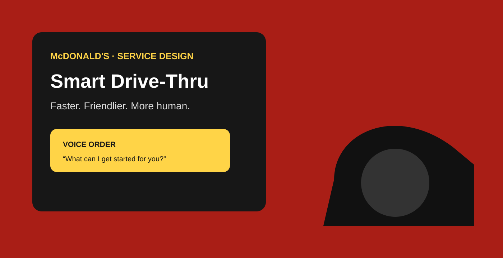

Design a conversation that works while attention is divided.
Drive-thru ordering combines environmental noise, competing attention, menu complexity and pressure to keep the line moving. A voice interface cannot assume perfect recognition or patient users. It needs to understand intent, recover gracefully and make the final order trustworthy.
My role: connect interaction design to the service
I treated the problem as a service experience rather than a voice-only interface. That meant considering the customer's conversational flow alongside order confirmation, correction, handoff and the operational context that ultimately delivers the order.
Strategy: structure the conversation around confidence
Short turns identify intent. Critical choices are confirmed. Corrections are treated as normal rather than exceptional. Before submission, the system summarizes the order so the customer has a clear opportunity to catch mistakes.
Capture the user's intent without forcing menu navigation into a rigid sequence.
Use concise confirmations at moments where an error would be costly or frustrating.
Design correction as a first-class path for noise, recognition errors and changed intent.
The interface is only one part of the service
A successful conversational exchange can still fail if the downstream service is unclear. The concept therefore considers how order state, customer confirmation and operational handoff fit together. That systems view is essential when designing for real-world environments.
Leadership impact
This case demonstrates how I adapt UX strategy to an unfamiliar interface: start with context, define the moments where confidence matters, design recovery deliberately, and align the customer interaction with the service that must deliver it.